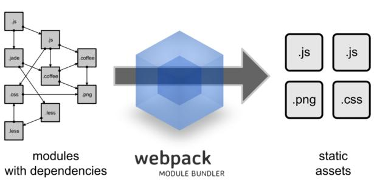

hello webpack 5大核心概念
- Entry 入口指示Webpack以哪个文件
- Output 输出文件，指示webpack打包后的资源bundle输出到哪里去，以及如何命名
- Loader 翻译官，让webpack能够去处理那些非javascript文件（webpack只认识JavaScript）
- Plugins 插件，可以用于执行范围更广的任务，插件范围包括，从打包优化和压缩，一直到重新定义环境中的变量等等
-
Mode {
development： 会将process.env.NODE_ENV 值设置为development。启动NamedChunksPlug 和NamedModulesPlugin能够让代码本地调试运行的环境
production： 会将process.env.NODE_ENV值设置为production。启用FlagDependencyUsagePlugin, FlagIncludedChunksPlugs, ...能够让代码上线运行
}
2. 结论
-
1.webpack 能处理js/json资源。不能处理css/img 等其他资源
- 2. 生产环境和开发环境将es6模块化编译成浏览器能认识的别的模块
- 3. 生产环境比开发环境多1个压缩的js代码
1
2
3
